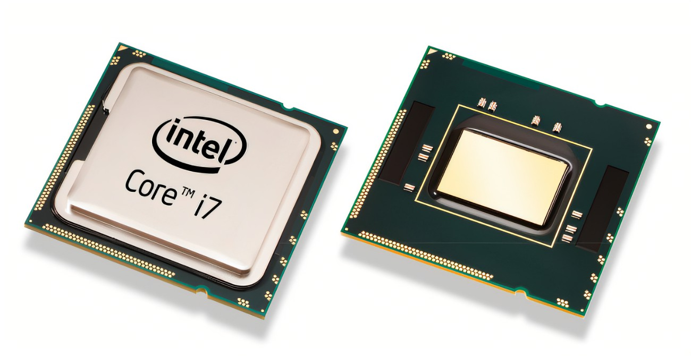

Multiprocesadores
Un multiprocesador puede verse como un computador paralelo compuesto por varios
procesadores interconectados que comparten un mismo sistema de memoria.
Los sistemas multiprocesadores son arquitecturas MIMD con memoria compartida.
Tienen un único espacio de direcciones para todos los procesadores y los mecanismos
de comunicación se basan en el paso de mensajes desde el punto de vista del programador.
Dado que los multiprocesadores comparten diferentes módulos de memoria,
pudiendo acceder a un mismo módulo varios procesadores, a los multiprocesadores
también se les llama sistemas de memoria compartida.
Dependiendo de la forma en que los procesadores comparten la memoria, se
clasifican en sistemas multiprocesador UMA, NUMA y COMA.
Multiproceso es tradicionalmente conocido como el uso de múltiples
procesos concurrentes en un sistema en lugar de un único proceso en un
instante determinado. Como la multitarea que permite a múltiples procesos
compartir una única CPU, múltiples CPUs pueden ser utilizados para
ejecutar múltiples hilos dentro de un único proceso.
El multiproceso para tareas generales es, a menudo, bastante difícil
de conseguir debido a que puede haber varios programas manejando datos internos
(conocido como estado o contexto) a la vez.
Los programas típicamente se escriben asumiendo que sus datos son
incorruptibles. Sin embargo, si otra copia del programa se ejecuta en otro procesador,
las dos copias pueden interferir entre sí intentando ambas leer o escribir su
estado al mismo tiempo.
